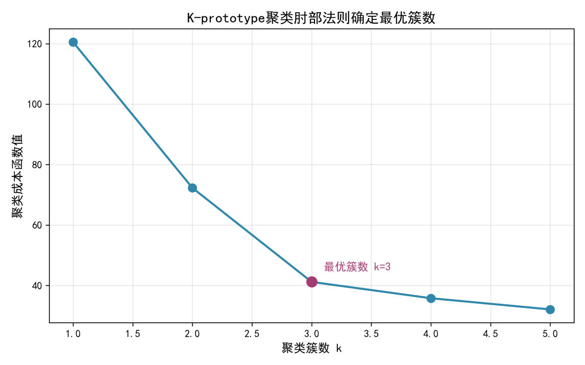
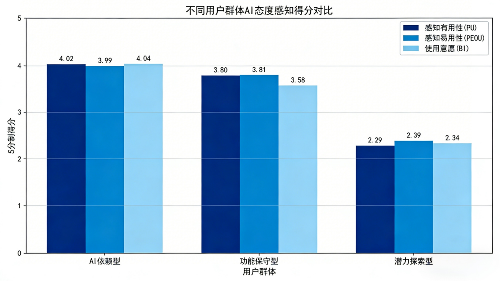
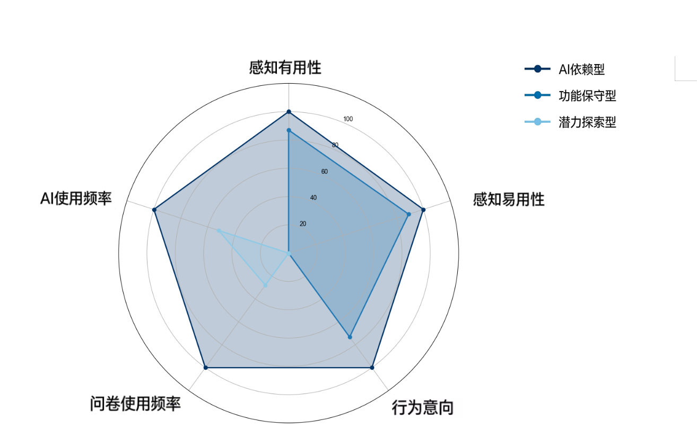
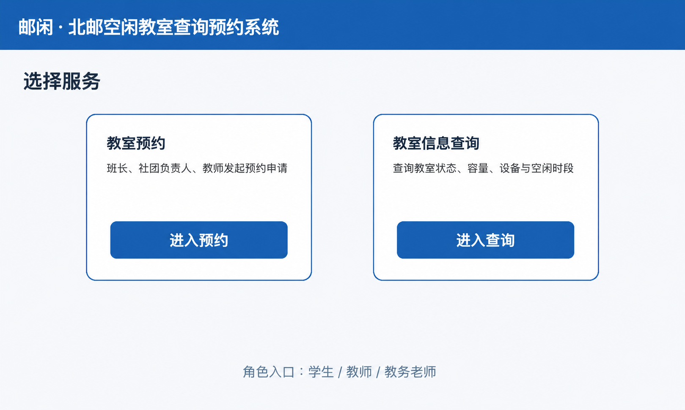
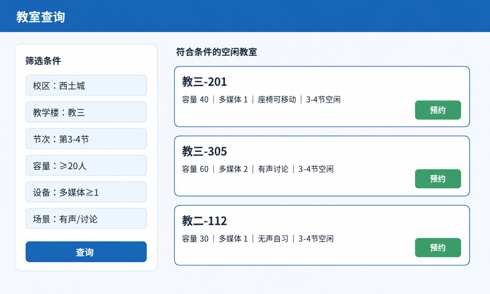
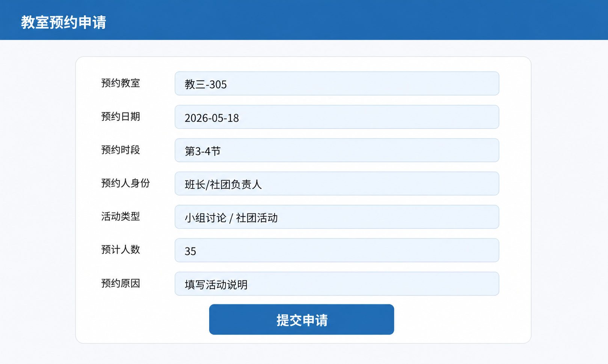
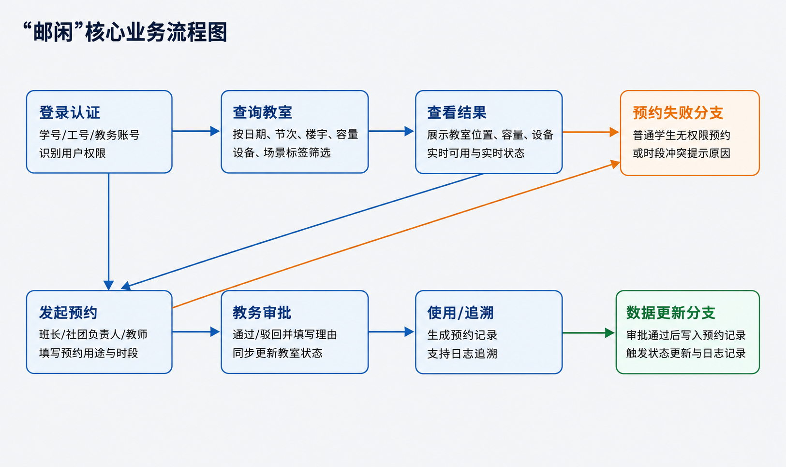

2026PRODUCT CASEBOOK
USER RESEARCH · PRODUCT DESIGN · DATA
把复杂问题
拆成可验证的产品方案
产品经理作品集
北京邮电大学产品经理实习01 / 11
USER RESEARCH · PRODUCT DESIGN · DATA
产品经理作品集
从用户问题出发，用数据判断优先级，再把洞察落成清晰的功能与流程。
AI × ONLINE SURVEY
我的职责：主成分分析 + 研究结果解释 + 产品策略输出
文献研究
半结构化访谈
446 份有效样本
信效度检验
主成分分析
K-prototype 聚类
IPA 优先级
功能与增长策略

访谈用于补足量化结果难以解释的“为什么”。
核心诉求：提效、准确性、易用性。
核心顾虑：成本、操作复杂度、功能准确性与数据隐私。
商业信号：有 AI 使用经验的用户付费意愿显著更高。

优先优化开放题智能编码，强化准确性、可校验性与人工修订。
以智能数据分析作为价值入口，建立“体验—认可—付费”的转化链路。
覆盖问卷生成、清洗、分析、报告输出，同时补齐隐私与可靠性机制。

YOUXIAN · CAMPUS SPACE
我的职责：查询模块需求调研、字段设计、筛选逻辑、PRD/原型/流程输出




这是项目测试阶段的小范围可用性测试，不代表正式上线后的全量运营数据。